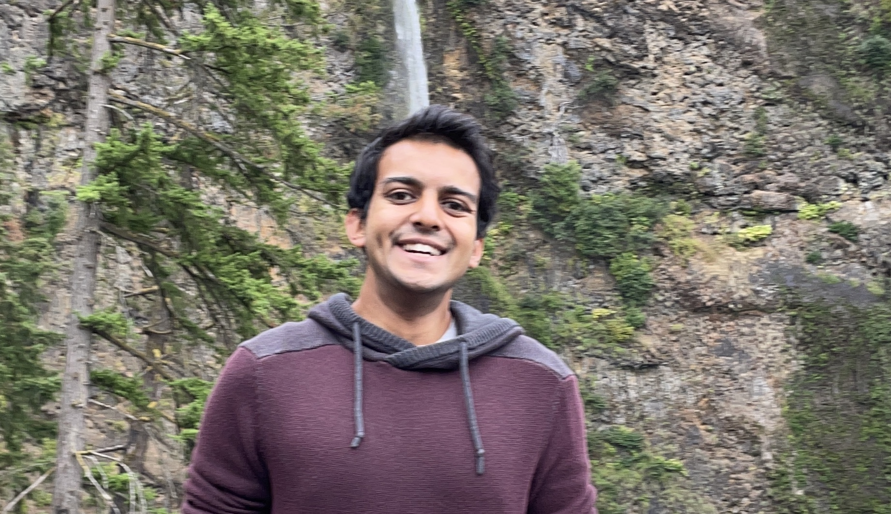

Akhil Jalan

Email: akhiljalan [at] utexas [dot] edu
[Curriculum Vitae (CV)]
I am a second-year computer science PhD student at UT Austin, and a member of the Theory Group. I am fortunate to be advised by Dana Moshkovitz.
Research interests: computational complexity theory, especially
- Pseudorandomness
- Hardness of approximation
- Coding theory
Papers
Near-Optimal Cayley Expanders for Abelian GroupsAkhil Jalan, Dana Moshkovitz.
FSTTCS 2021.
[Conference Paper: FSTTCS 2021]
[Talk: FSTTCS 2021]
[arXiv]
Too Many Fairness Metrics: Is There a Solution?
Swati Gupta, Akhil Jalan, Gireeja Ranade, Helen Yang, Simon Zhuang.
Ethics of Data Science 2020.
[Conference paper: Ethics of Data Science 2020]
[Lightning talk: Mechanism Design for Social Good 2020]
[Poster Session: Mechanism Design for Social Good 2020]
Some New Numeric Results Concerning the Witsenhausen Counterexample
Vignesh Subramanian, Laura Brink, Nikunj Jain, Kailas Vodrahalli, Akhil Jalan, Nikhil Shinde, Anant Sahai.
Allerton 2018.
[Conference Paper: Allerton 2018]
Other Writing
The Structure of the Sandpile GroupAkhil Jalan.
[Bachelor's Thesis: UC Berkeley 2019]
Miscellaneous
If you are at UT, check out Mathematicians of Color Alliance at Texas (MoCAT).My Erdos number is 3 (calculate yours here).
The template for this webpage is due to Pasin Manurangsi.